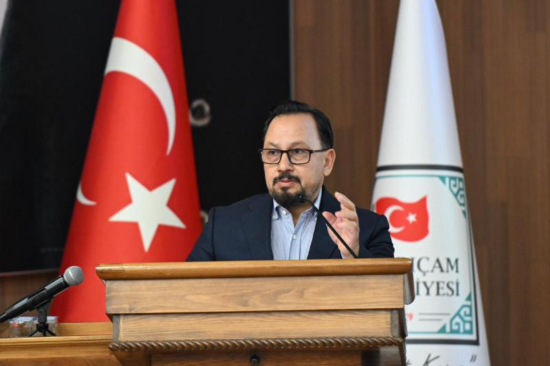

ÇEVRE VE İKLİMİklim Eylem PlanıBugünden yarına,
Bugünden yarına,
daha dirençli bir kent.
Sarıçam’ın 69 mahallesini kapsayan Yerel İklim Değişikliği Eylem Planı, COP31’de kamuoyuyla paylaşıldı. Su kaynakları, enerji verimliliği ve sürdürülebilir kent yaşamı planın öne çıkan konuları arasında.